Stavba ostane rdeča. Pri vsaki smeri je na dolgi steni napis, na kovinski konstrukciji na vrhu stolpa pa svetlobna škatla z maskoto, ki se vidi od daleč. Prikazano podnevi in ponoči. Na rdeči pločevini najlepše delujejo bela, črna, zlata in jeklena, zato je rožnata samo v logotipu, ne na fasadi.
Lastna glava črnega panterja v profilu
Maskota je narisana na novo in ni podobna liku iz risanke: realističen črn panter v profilu z rožnatim očesom. Stoji v svetlobni škatli na konstrukciji vrh stolpa, pri vsaki smeri v drugem materialu (bela, zlata, jeklena). Uporablja se tudi kot profilna slika, žig, na kozarcih in majicah.
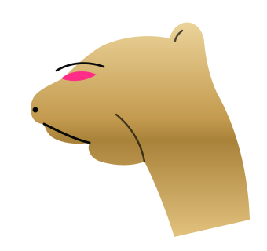
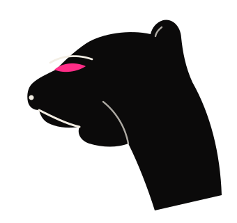
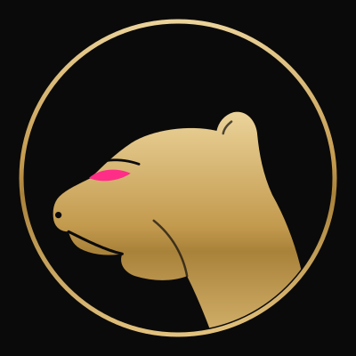
Instrument Serif + Tenor Sans
Uredniški slog modnih revij: »Pink« v ležečem rezu, »Panther« pokončno. Mirno, samozavestno, drago. Znak: P z rožnato piko.
Tabla: Črne kovinske črke, osvetljene od zadaj (halo na rdeči pločevini)
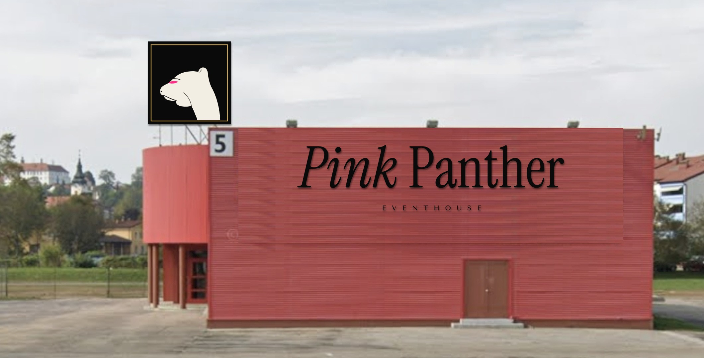
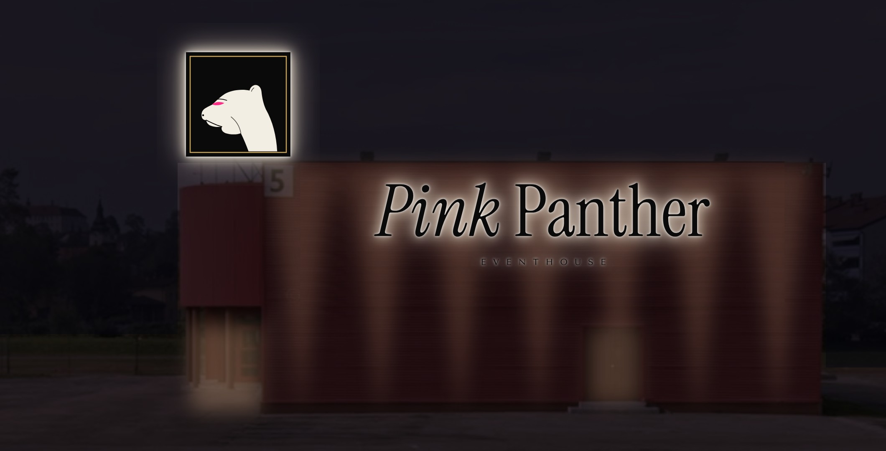
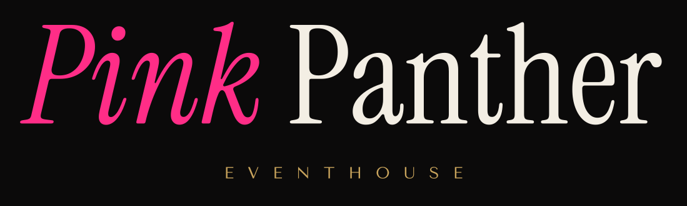
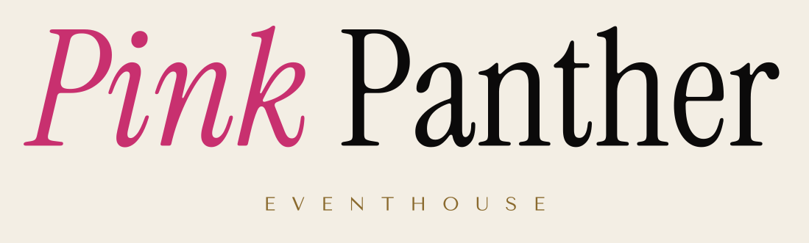
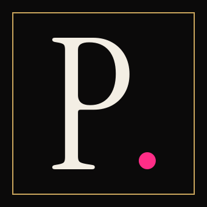
Gloock + Tenor Sans
Ostra klasična pisava z visokim kontrastom, kot vhod v hotel ali kazino. Na rdeči fasadi zlato deluje najbolj prestižno. Znak: PP v krogu.
Tabla: Medeninaste (zlate) 3D črke, ponoči tople luči od zadaj
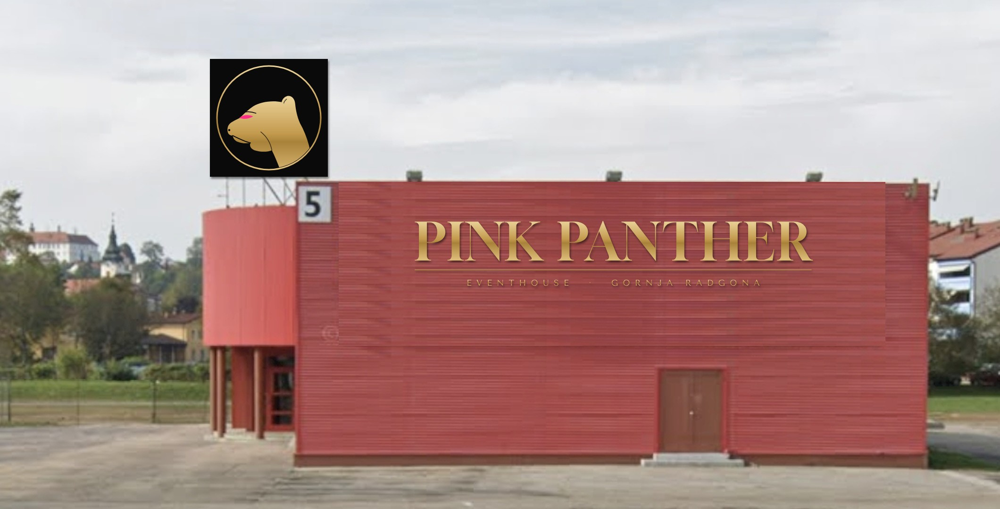
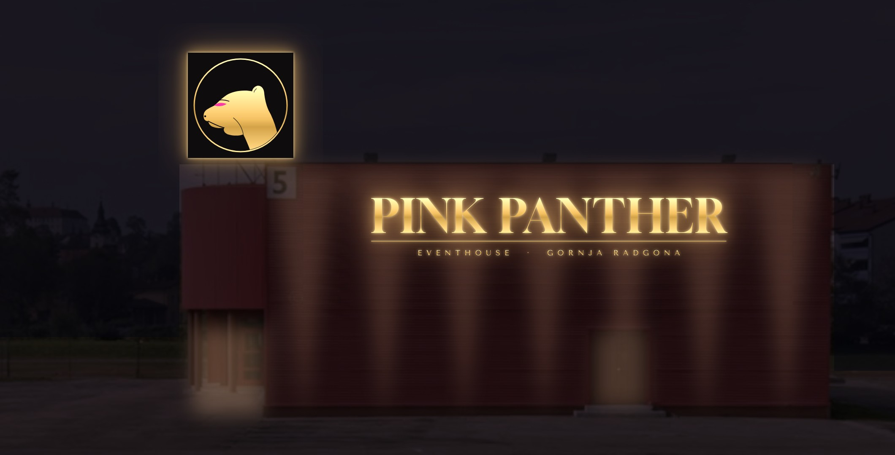
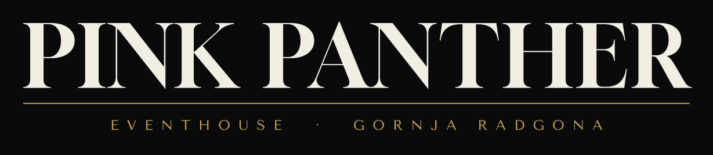
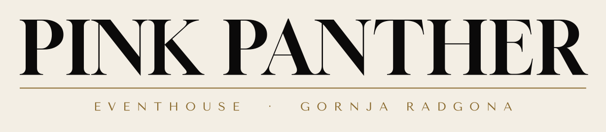
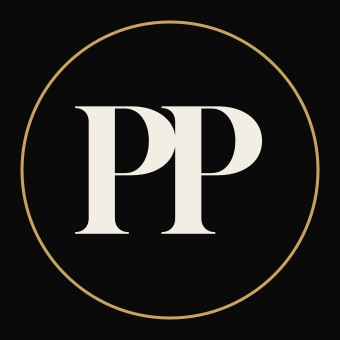
Pirata One + Tenor Sans
Gotske črke, kot pri luksuznih streetwear znamkah in techno klubih. Najbolj drzen predlog, a še vedno eleganten. Znak: gotski P.
Tabla: Bele svetleče črke (LED v sprednji strani)
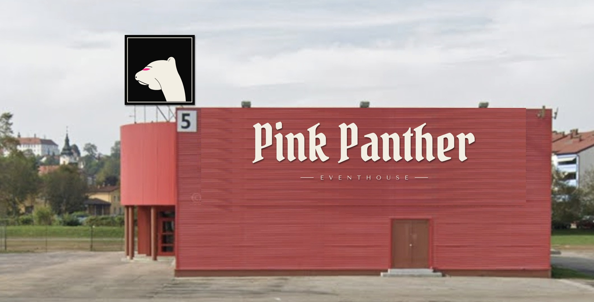
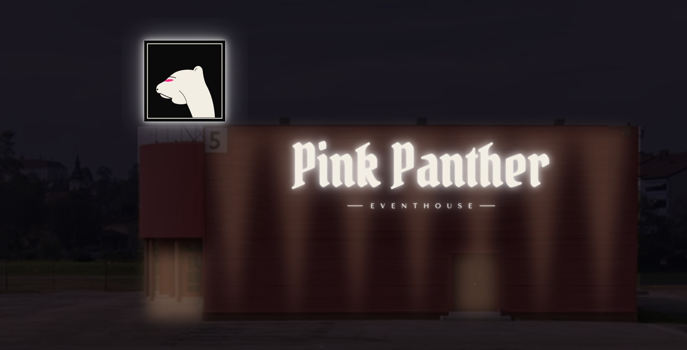
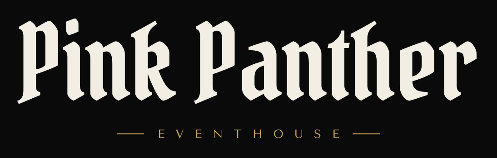
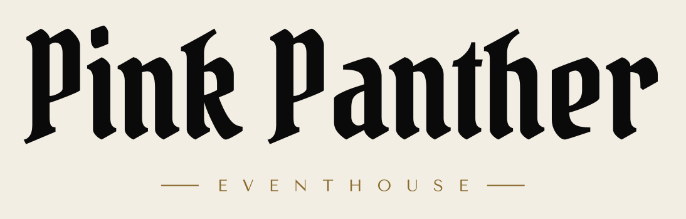
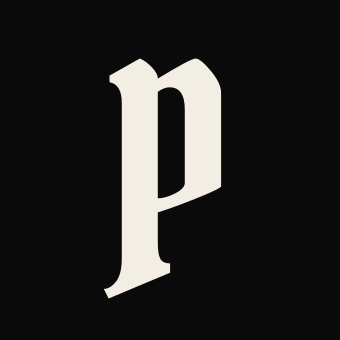
Michroma
Široke tehnične črke, kot pri luksuznih avtomobilskih znamkah. Hladno, moderno, »VIP«. Znak: PP v kapsuli.
Tabla: Brušeno jeklo, bela LED osvetlitev od zadaj
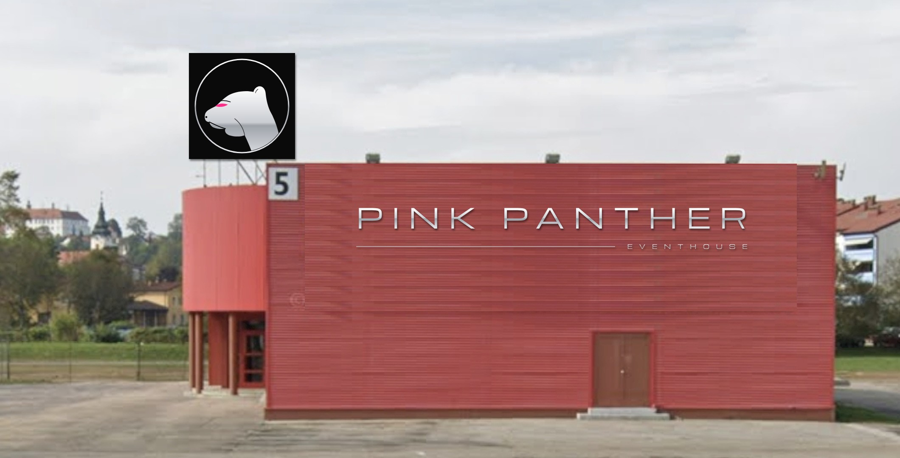
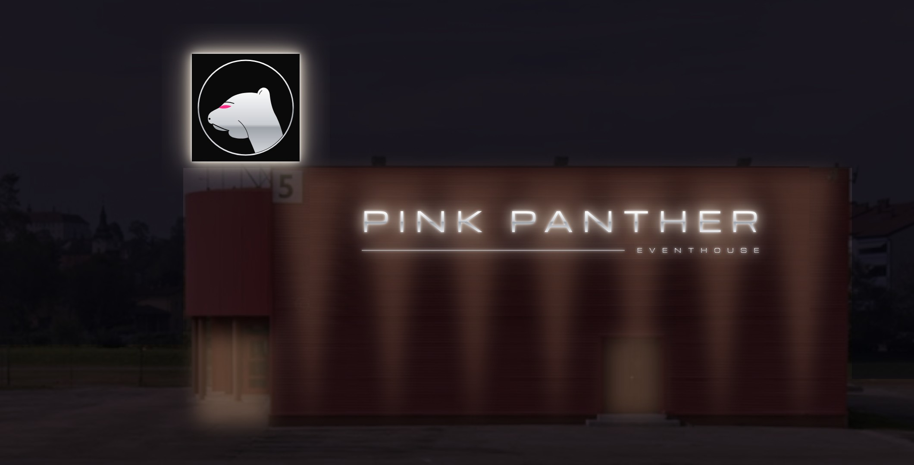
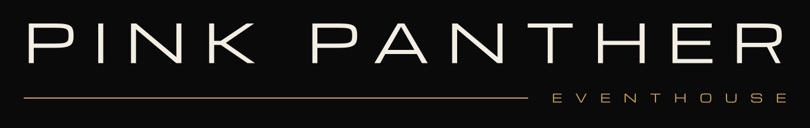
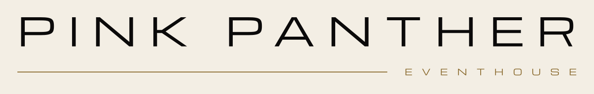
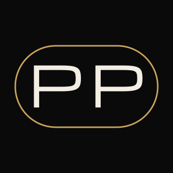
Six Caps + Tenor Sans
Klasičen grand hotel in gledališče: zelo ozke, visoke črke in navpična tabla na stolpu, ki se vidi že od daleč. Znak: visok P v okvirju.
Tabla: Visoke bele črke na steni + navpična tabla »PANTHER« na stolpu
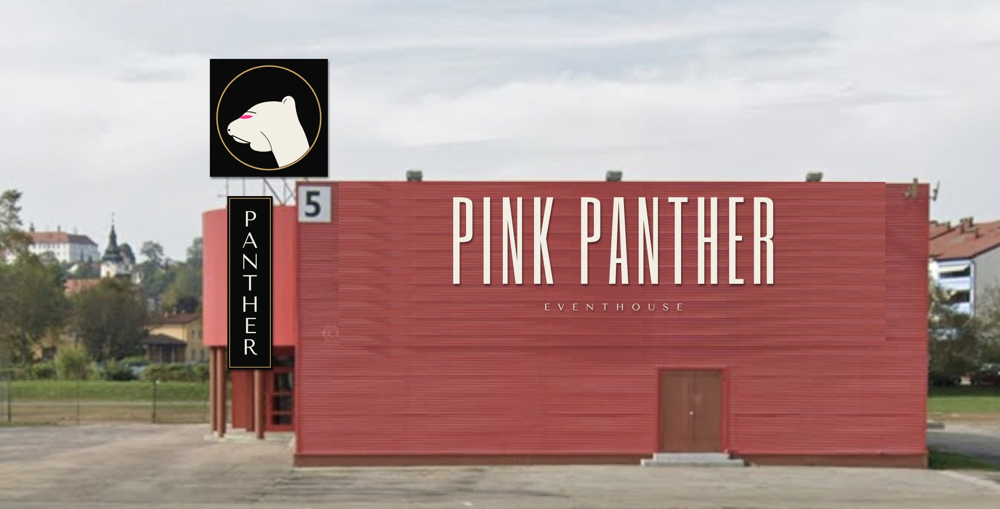
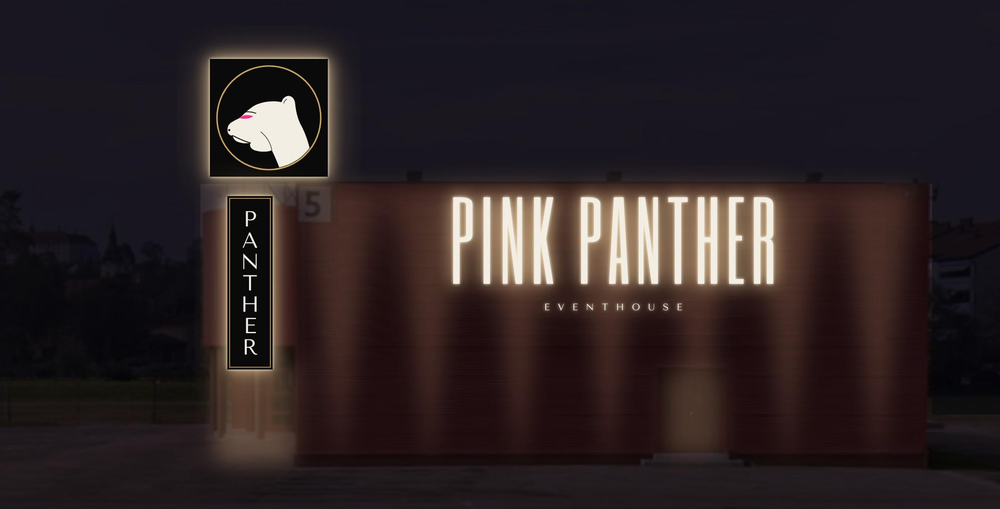
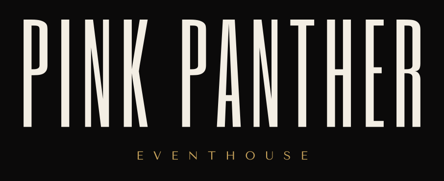
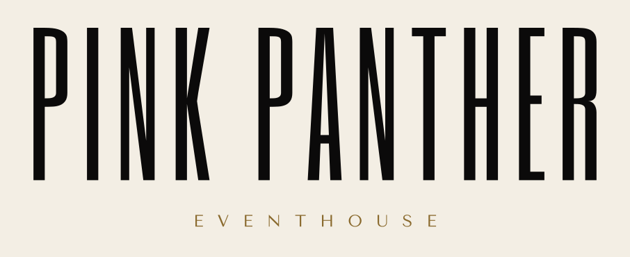
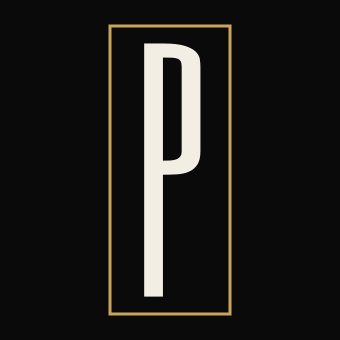